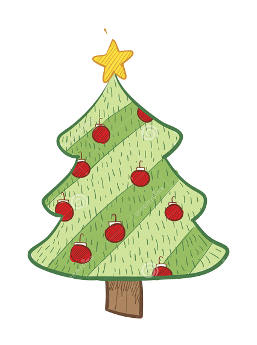

C’era una volta un piccolo albero di Natale che, quando parlava con mamma albero di Natale e papà albero di Natale, non vedeva l’ora di poter indossare le palline colorate, i festoni argentati e le lampadine.

Ogni notte sognava il suo momento, entrare in un bel salotto,
gustarsi i sorrisi, gli auguri in famiglia, lasciarsi sfuggire
una lacrima di resina dalla contentezza.
E venne finalmente il giorno del piccolo albero di Natale. Venne scelto quasi per caso tra tanti amici alberi di Natale.
Pensava: "Adesso è venuto il mio momento, adesso sono diventato grande."
Dopo un viaggio, incappucciato di stoffa bagnata per non perdere il verde luminoso dei rami, il piccolo albero di Natale si trovò nella casa di una famiglia povera. Niente palline, niente festoni, solo il suo verde scintillante faceva la felicità dei bambini che lo stavano a guardare con gli occhi all’insù, affascinati.
Era il loro primo albero di Natale. Subito fu una delusione, sperava di poter dominare un salone ricco di regali e di addobbi eleganti.
Ma passarono i giorni e si abituò a quella casa povera ma ricca di amore.
Nessuno aveva l’ardire di toccarlo.
Venne la sera di Natale e furono pochi i regali ai suoi piedi ma tanti i sorrisi di gioia dei bambini che per giorni erano rimasti a guardarli sotto il suo sguardo severo per cercare di indovinare cosa ci fosse dentro.
Venne il pranzo di Natale, niente di speciale.
Venne Capodanno, con un brindisi discreto, ma auguri sinceri.
E venne anche l’Epifania e il momento di andare via.
Questa volta non lo incappucciarono.
Lo tolsero dal vaso, gli bagnarono le radici e tutta la famiglia lo accompagnò verso il bosco.
Era felice di ritornare con mamma albero di Natale e papà albero di Natale.
Passando per la strada vide tanti suoi amici, ancora con le palline colorate e i fili d’oro e d’argento, che lo salutavano.
Ma c’era qualcosa di strano, erano tutti nei cassonetti della spazzatura, ricchi e sventurati, piangevano anche loro resina, ma non per la contentezza. Chissà dove sarebbero finiti!
Ora il piccolo albero di Natale è diventato un abete grande e possente.
Ha visto tanti figli andare in vacanza per le feste, qualcuno è ritornato, sano o con un ramo spezzato. Lui guarda da lontano la città dove i bambini del suo Natale lo hanno amato e rispettato.
Perché è un albero di Natale, albero di Natale tutto l’anno, perché Natale non vuol dire essere buoni e bravi solo il 25 dicembre, perché Natale può essere ogni giorno. Basta volerlo, come quel piccolo albero di Natale che ci tiene compagnia sulla montagna, anche se lontano, anche se non lo vediamo.
Ha visto tanti figli andare in vacanza per le feste, qualcuno è ritornato, sano o con un ramo spezzato. Lui guarda da lontano la città dove i bambini del suo Natale lo hanno amato e rispettato.
Perché è un albero di Natale, albero di Natale tutto l’anno, perché Natale non vuol dire essere buoni e bravi solo il 25 dicembre, perché Natale può essere ogni giorno.
Spegni la luce e desidera intensamente di vedere la magia del Natale!